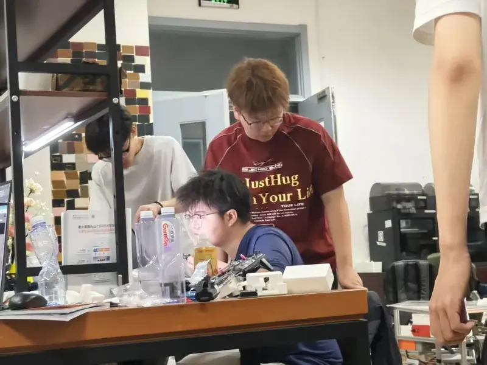
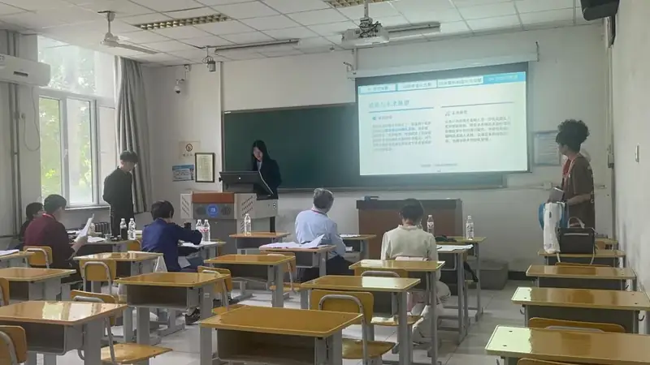
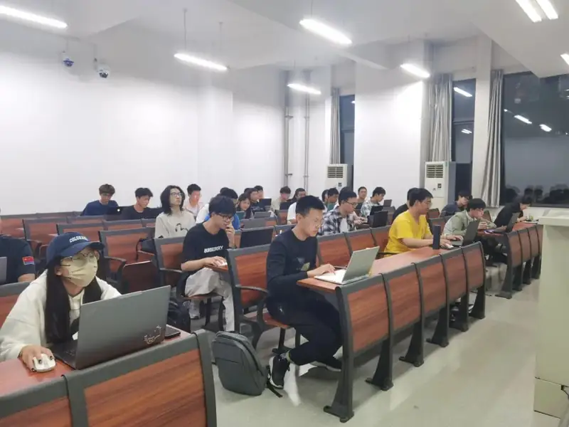

金工楼 405 精创工作室成立
从 2019 年起组织学生队伍参加机械创新设计大赛、工程实践与创新能力大赛等 A 类赛事，持续积累工程实践与竞赛经验。
从金工楼 405 到 406，从工作室到社团。我们把“交流—实践—竞赛”做成一条可以走完的路。
精创寰宇社（Elite Innovation Cosmos Studio，EICS）是北京建筑大学工程实践中心指导的跨学科科创社团。前身为 2019 年成立的金工楼 405 精创工作室，2025 年 9 月正式升级为社团，迁至金工楼 406。
社团面向机电、智科、测绘、经管等学院本科生，以“交流—实践—竞赛”为培育闭环：先在分享会里建立共同语言，再在实验室里把方案做成实物，最后把作品带进赛场。
我们不要求每个人带着奖项进来。零基础可以，愿意学、愿意动手、愿意和队友把问题拆开，是更重要的起点。
工作室时期的积累，成为社团成立后的底盘。
从 2019 年起组织学生队伍参加机械创新设计大赛、工程实践与创新能力大赛等 A 类赛事，持续积累工程实践与竞赛经验。
工作室正式升级为社团，更名“精创寰宇社”，从金工楼 405 迁至 406，开始以社团形式组织培养、竞赛与品牌活动。
形成管理组、科技创新组、文化宣传组分工协作，启动内部科创知识库建设，沉淀培训教程与备赛经验。
不是先学会再上场，而是在交流中选题、在实践中成型、在竞赛中校验。
工程知识分享会、竞赛技术分享、跨专业组队，先让不同背景的人拥有共同语言。
三维建模、PCB 设计、Linux 嵌入式、零件加工与整机装配，把方案做成可以运行的实物。
挑战杯、工创赛、机创赛、睿抗、蓝桥杯等赛事，以赛促学、以赛促创，把作品带到更高舞台。
社团日常运营与协调，承接招新、例会、物资与活动组织。
技术培训、项目攻关与赛事支持，推动作品从方案走向样机。
内容记录、宣传与成果展示，把社团做过的事讲清楚。
固定的技术交流与成果展示渠道，让校内外科创爱好者有地方可去。
围绕赛事规则、作品拆解与答辩经验做专项分享，把赛场上的方法带回社团。
从建模、电路到嵌入式，把跨专业的基础知识讲给新成员，降低入门门槛。
集中展示社团年度作品与竞赛成果，面向校内外开放，形成固定的展示窗口。
工学博士、教授、硕士生导师，车辆工程系主任。社团指导教师，参与竞赛指导与作品训练；研究方向为结构疲劳与断裂、车辆系统动力学、智能运维保障技术。
中级工程师、讲师。指导教师，负责社团技术方向与赛事指导。



如果你愿意动手，下一次开门时，欢迎进来看看。